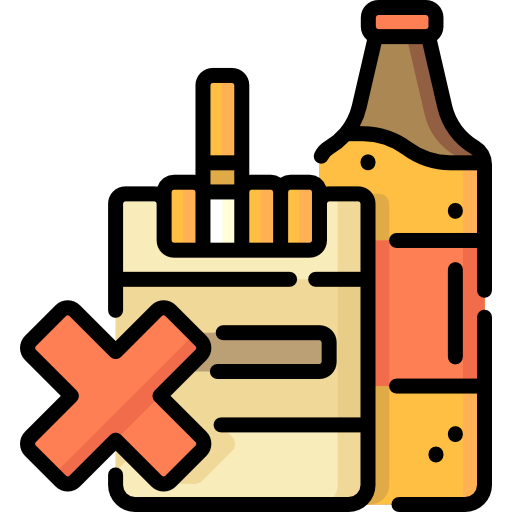
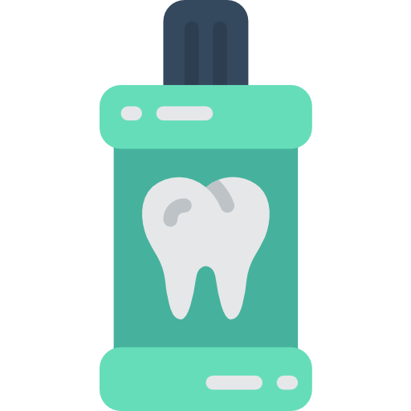
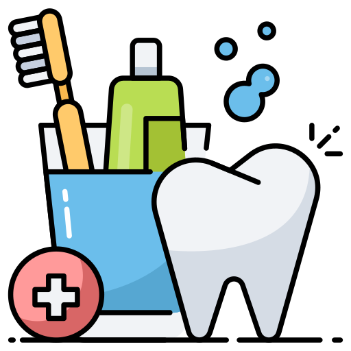

La salute del tuo sorriso inizia dalla prevenzione

Igiene quotidiana
Lava i denti almeno due volte al giorno, si consiglia di usare un dentifricio con fluoro e uno spazzolino a setole morbide.

Alimentazione equilibrata
Si consiglia di limitare il consumo di zuccheri e cibi acidi, che possono danneggiare lo smalto dei denti.

Visite regolari
Pianifica una visita ogni sei mesi per un check-up completo e una pulizia professionale

Abitudini da evitare
Il tabacco è un fattore di rischio importante per malattie gengivali e cancro orale.

Uso del collutorio
Scegli un collutorio contenente ingredienti antibatterici, che possono ridurre i batteri nella bocca e prevenire problemi come la gengivite. Fai attenzione a non sciacquare subito dopo aver spazzolato, per permettere al fluoro di agire.

Buone abitudini
Si consiglia di cambiare lo spazzolino ogni tre o quattro mesi, o prima se le setole sono già usurate. Uno spazzolino nuovo ed efficace può fare una grande differenza nella pulizia dei denti.

Consiglio del Dentista
Per una corretta pulizia dei denti si consiglia di usare lo scovolino per rimuovere placche batteriche e residui alimentari negli spazi tra i denti dove lo spazzolino non raggiunge facilmente.